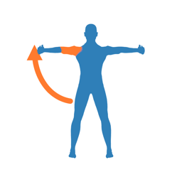

肩関節セルフリハビリ3D サポート
「肩関節セルフリハビリ3D」は、肩の病気やけが、手術のあとに行うリハビリ運動を、3Dの人体モデルの動きで説明するアプリです。
使い方
- 「疾患・時期から選ぶ」で疾患と時期を選ぶと、その時期に必要な運動が「◎最優先・○推奨・△余裕があれば」の順に表示されます。行わない運動も理由とともに示します。
- 「すべての運動」では、33種類の運動をカテゴリ別に見られます。
- 運動を選ぶと3Dの人体がお手本の動きを再生します。速さ（0.5×・1×）と、正面・側面・背面・上・斜めの視点を切り替えられます。指でなぞると回転、ピンチで拡大・縮小できます。
- 画面上部の「右・左」で患側を切り替えると、動きが左右反転します。
- 「出典」で参考にした論文・ガイドラインの一覧、「?」で痛みの目安などの注意を表示します。
よくある質問
インターネット接続は必要ですか？
不要です。すべての機能がオフラインで動作します。
医療機器ですか？
いいえ。一般的な運動の説明を目的とした教材であり、診断や治療方針の決定を行うものではありません。運動の開始時期・角度・回数は病状や手術の内容によって異なりますので、必ず主治医・セラピストの指示を優先してください。
お問い合わせ
ご意見・不具合のご報告は、下記までメールでお送りください。
natchi@symphony.plala.or.jp
プライバシーポリシー